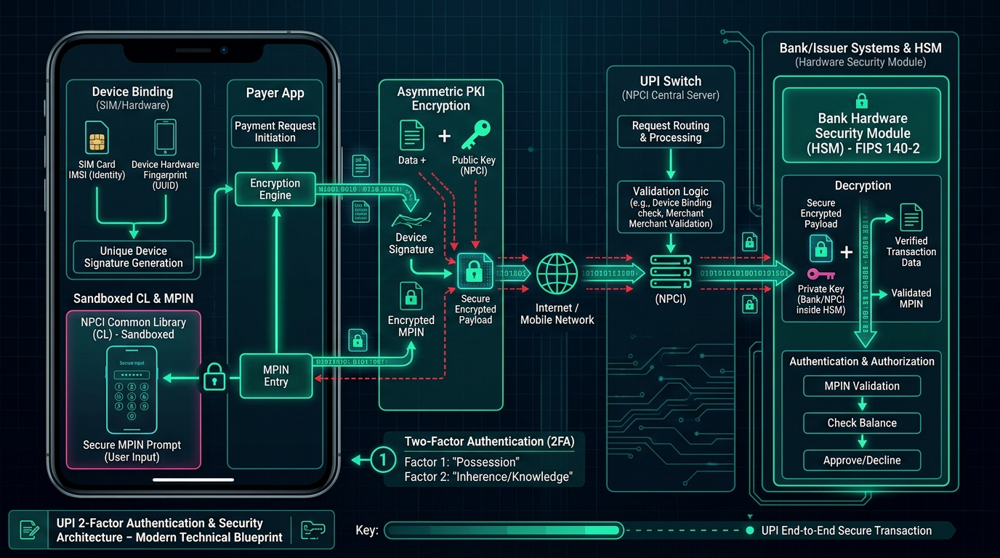

In India, over 15 billion real-time transactions happen every month with a simple QR scan or phone tap taking less than 2 seconds. But behind that smooth checkout screen lies one of the most sophisticated distributed financial architectures ever built. Where does your money actually go, how is your PIN encrypted, and what is the real difference between the UPI protocol and apps like Google Pay, PhonePe, Paytm, and Supermoney?

Figure 1: High-level architectural topology of the UPI 4-party ecosystem (TPAPs, PSP Sponsor Banks, NPCI Switch, and Core Banking Systems).
1. What Exactly is UPI?
UPI (Unified Payments Interface) is an instant, real-time payment protocol developed by the National Payments Corporation of India (NPCI) and regulated by the Reserve Bank of India (RBI).
Unlike digital wallets (like the old Paytm Wallet or PayPal) which require you to pre-load cash into a digital balance, UPI facilitates direct, instantaneous inter-bank fund transfers (Account A ➔ Account B) 24/7/365 using the underlying IMPS (Immediate Payment Service) messaging rails.
- Interoperability: A PhonePe user can send money to a Google Pay user, who in turn pays a merchant on Paytm or Supermoney without any friction.
- Zero Sensitive Data Sharing: Senders and receivers never exchange account numbers, debit card details, or IFSC codes. They only share a VPA (Virtual Payment Address).
- Two-Factor Authentication (2FA) Built-In: Combines device fingerprinting (SIM binding) with a 4 or 6-digit cryptographic MPIN.
2. The Big Misconception: UPI vs. UPI Apps
Many people ask: "Is Supermoney a new payment network? Is PhonePe a bank?"
The answer is No. To understand the ecosystem, we must dissect the 4 key players:
| Entity | Role | Examples | What They Actually Do |
|---|---|---|---|
| 1. TPAP (Third-Party App Provider) | Frontend Client / App Layer | Google Pay, PhonePe, Paytm, CRED, Supermoney, Navi | Provides UI/UX, contact search, QR scanner, bill payments, and invokes the secure UPI library. They do not hold banking licenses and do not touch your money. |
| 2. PSP Bank (Payment Service Provider) | Banking Gateway Sponsor | HDFC Bank, ICICI Bank, Axis Bank, State Bank of India, YES Bank | Acquiring banks that provide direct API integration channels to the NPCI UPI switch for TPAPs (e.g. @okhdfcbank, @ybl, @superyes). |
| 3. NPCI (Central Switch) | Central Clearing Switch & Mapper | NPCI Central Infrastructure | Resolves VPAs to bank account numbers, routes encrypted payloads, performs central clearing, and orchestrates IMPS settlements. |
| 4. Issuer / Remitter / Beneficiary Banks | Core Banking Systems (CBS) | SBI, PNB, Kotak, HDFC, Bank of Baroda | Holds the actual customer bank accounts and ledgers. Performs balance checks, validates MPIN via HSM, and executes the actual debit/credit. |
Why Are New Apps like Supermoney & CRED Launching UPI?
Apps like Supermoney (by Flipkart) or CRED do not build a new banking network. They partner with sponsor banks (like YES Bank, Axis, or ICICI) under NPCI’s multi-bank model as certified TPAPs. They leverage UPI's open interoperability to offer rewards, specialized cashback, or credit features while routing transactions through the exact same NPCI switch!
3. Under the Hood: The 8-Step Transaction Lifecycle
Let's trace what happens when Alex pays ₹500 to Priya (VPA: priya@okhdfcbank) via an app:
Figure 2: Chronological sequence of a real-time UPI transaction.
Step-by-Step Breakdown:
-
Scan & Input: Alex scans Priya's QR code or enters
priya@okhdfcbankand types ₹500. - Secure MPIN Entry (CL Library): The app opens the NPCI Common Library (CL) popup. The TPAP app itself never gets access to your keystrokes or MPIN.
- Asymmetric PKI Encryption: The CL encrypts the MPIN with the public key of Alex’s bank (Remitter Bank) inside an encrypted credential block (XML/JSON payload).
- PSP Forwarding: The payload is signed and sent through Alex’s PSP Bank gateway to the NPCI Central Switch.
-
VPA Mapper Resolution: NPCI looks up
priya@okhdfcbankin its central mapper database, finding Priya’s actual Account Number + IFSC code at HDFC Bank. - Debit Execution: NPCI forwards the debit request to Alex's Bank (e.g. SBI). SBI’s Hardware Security Module (HSM) decrypts and verifies the MPIN, checks for sufficient balance, and debits ₹500.
- Credit Execution: Upon receiving the debit success signal, NPCI instructs Priya’s bank (HDFC) to credit ₹500 to her ledger.
- RRN & Success Notification: NPCI generates a unique 12-digit RRN (Retrieval Reference Number) and pushes success webhooks to both banks and apps simultaneously.
4. Security Architecture: Why You Can't "Hack" a UPI PIN in Transit

Figure 3: Device Binding (SIM IMSI), Sandboxed Common Library (CL), PKI Encryption, and Bank HSM Security.
UPI's rock-solid security is powered by a multi-layered cryptographic pipeline:
1. Device Binding (Factor 1 - What You Have)
When you install any UPI app, it sends a silent, cryptographically signed SMS from your SIM card to the bank. The bank links your app instance with:
- SIM IMSI & phone number
- Device Hardware Fingerprint (IMEI / UUID)
- Client public/private keypair
If an attacker clones your app or runs it on an emulator without that exact physical SIM, the bank immediately drops the connection.
2. Hardware Security Modules & PKI (Factor 2 - What You Know)
Your 4/6-digit MPIN is never transmitted in plain text, nor is it stored in your phone's memory.
// Conceptual Structure of an Encrypted UPI Payload
{
"txnId": "UPI202608149812401924",
"payerVpa": "alex@ybl",
"payeeVpa": "priya@okhdfcbank",
"amount": "500.00",
"currency": "INR",
"credBlock": {
"type": "MPIN",
"encryptedValue": "MIIBIjANBgkqhkiG9w0BAQEFAAOCAQ8AMIIBCgKCAQEAz42k...",
"keyVersion": "SBI_PKI_V3"
},
"deviceFingerprint": "a9f81d4b2e67c801e0a293"
}
The NPCI Common Library (CL) is a sandboxed SDK distributed by NPCI with strict Android/iOS screen-recording protections (FLAG_SECURE). When you type your MPIN, the app's JavaScript/Native layer cannot inspect or log the touch events.
5. Advanced Capabilities: UPI Lite, AutoPay & RuPay Credit
1. UPI Lite (On-Device Micro-Ledger)
High volumes of small payments (like buying a ₹10 chai) used to choke core banking servers. UPI Lite solves this by creating an on-device reserved balance (up to ₹2,000):
- Transactions up to ₹500 execute instantly with zero MPIN prompt.
- Offloads 40%+ of read/write transactions from bank Core Banking Systems (CBS).
2. UPI AutoPay (Recurring Mandates)
Allows programmatic, scheduled debits for SaaS subscriptions, SIP investments, and utility bills (e.g. Netflix, Spotify, Zerodha) with automated pre-debit push notifications 24 hours in advance.
3. RuPay Credit Card on UPI
Enables users to link their credit card accounts directly to their UPI VPA. When scanning merchant QR codes, users can choose between their savings account balance or their revolving credit line seamlessly.
6. Summary & Key Takeaways
- UPI is a Protocol, not an app: PhonePe, GPay, Paytm, and Supermoney are front-end TPAPs that route payments through sponsor PSP banks to the central NPCI switch.
- Zero Middleman Wallet Storage: All settlements happen instantly directly between Remitter and Beneficiary bank accounts via IMPS rails.
- Military-Grade 2FA: Device SIM binding + Asymmetric Public-Key encrypted MPIN validated exclusively inside Bank HSMs.
💬 Join the Conversation
Which UPI feature do you think was the biggest game changer: UPI Lite, QR interoperability, or Credit Cards on UPI? Share your perspective with the community on LinkedIn!